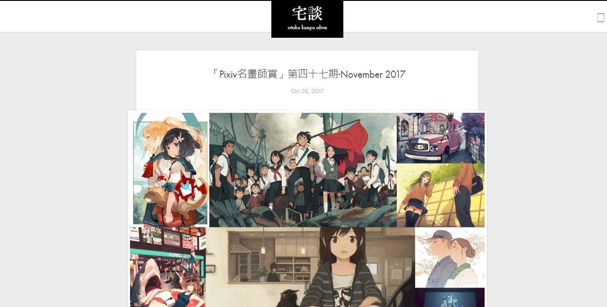
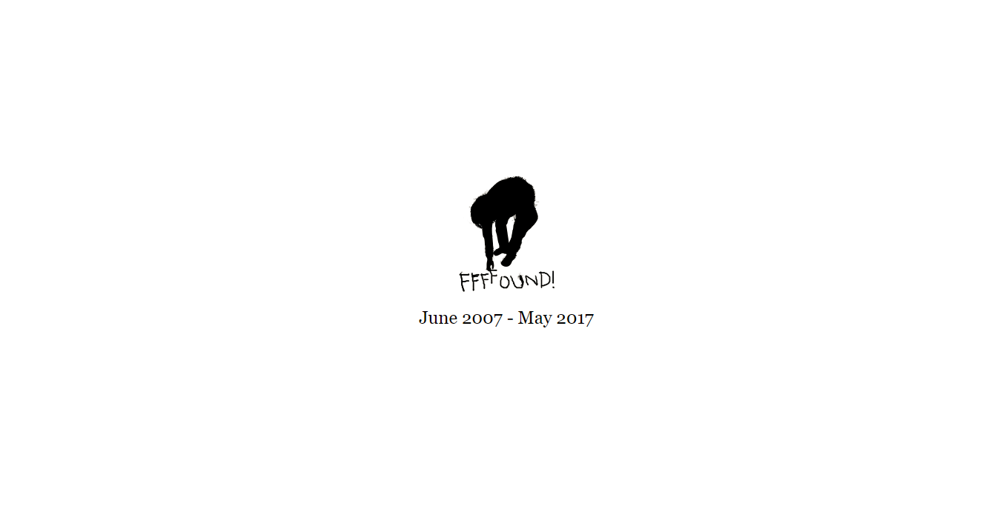

偶尔会有人跟我聊起画画的技巧，怎样才可以系统性地提高自己的审美水平。我是个萌新，诸如此类的问题，实在不敢妄加指点。不过，我可以将自己平常所频繁用到的学习渠道与大家做个分享。
以下的网址都是从个人chrome书签上精心选取的，也是我个人认为比较实用的，有兴趣的伙伴可以探索并收藏，毕竟是自己书签上的常客，不胡乱推荐。
学习绘画提升视觉审美没有什么好捷径，多看点东西（不限于绘画和设计），看后多练就行。走出家门到处看的条件不是每个人都可以有，那就靠伟大的互联网了。
目录
查看右栏可直接跳转
注：部分需要梯子，将以符号▲标出
绘画类
Poocg（涂鸦王国，萌新与大牛熬成一锅）
ArtStation（著名的A站，话说我的VL比越来越…）
pixiv（著名的P站,对大部分阿宅关于此站的用途表示遗憾）
![[pixiv]](../bookmarksshare1/2.jpg)
DeviantArt（极力推荐，因为它有绘画流程图）
Graphicker（去年刚刚建起的新兴平台，类似A站）
Web Gallery of Art（西方美术史老师推荐的，提升逼格专用）
ILLUSTRATION AGE（较少用）
宅談（偶然发现的博客，可以发现大牛）

Fine Art Blogger（专注油画类）
CG窝（做游戏的）
设计类
Dribbble（平面视觉类顶级大神集聚地）
Behance 在线作品集（依然如上）
站酷 (ZCOOL)（挺好的，就是不喜欢它的名字）
Awwwards - Website Awards（网站平面视觉设计）

Inspiration Grid | Design Inspiration
设计之家（同样觉得名字太普通，不过不错）
GAMEUI- 游戏设计圈聚集地（以后混饭吃的地方）

摄影类
Unsplash（如果只是用来收藏的话真是浪费）
LOFTER（创意者轻博客，聚集了一大批摄影师）
Visual Hunt（事实上找点图还可以）

Public Domain Images | Free Stock Photos
灵感收集类
▲Pinterest（混饭吃的）
▲Instagram（自己想办法上）
DuiTang（上面两个会让你学会知难而退）
花瓣（看来你已经领悟到退而求其次的真理）
动图 | Tumblr（刷表情的）
▲Vimeo（视觉艺术氛围极强的视频网站，极力推荐）
▲Google Arts & Culture（去见识世界吧）
BOOOOOOOM!
探索 - Cliprr Inc.
FFFFOUND!（已离去，致敬）

配色&色彩查询
中国传统色（极力推荐）
NIPPON COLORS - 日本の伝統色（极力推荐）

色輪 | 色彩配置 - Adobe Color CC（设计师用得比较多）
Color Scheme Designer 3_高级在线配色器
Piknik Color Picker（异常简洁的选色网站）
Color Hex - ColorHexa.com（常用的色彩查询）

ColorClaim – Color Inspiration
Color Hunt（现成配色模板）
导航
创造狮 创意工作者导航（推荐给设计师与开发者）
SDC设计师网址导航
最后
终极奥义!!!
▲Youtube（事实上我觉得它最有用）